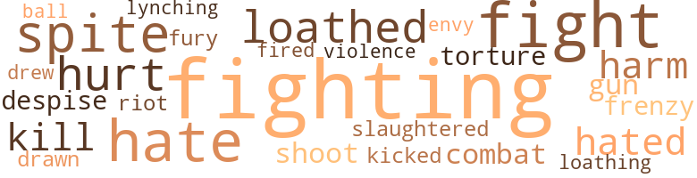

30 music-related terms matched in this text.
Most frequent terms in this topic: dance (7); line (4); sing (3); music (3); section (3)

chapter.n.01
Definition: a subdivision of a written work; usually numbered and titled
| word |
sentence |
| chapter |
Then , " Perhaps that is a closed chapter in my life now , Bill White . " |
dance.n.01
Definition: an artistic form of nonverbal communication
| word |
sentence |
| dance |
Mrs. Payne had come into the kitchen and reminded her that they wanted to see her when she was dressed for the dance . |
| dance |
There was to be a benefit dance . |
| dance |
It was beginning to rain as Irene arrived at the dance hall , and the dance was well in progress when she made her grand entrance . |
| dance |
Bull was standing around the poolroom and heard some of the men talking about the dance . |
| dance |
He was going to break up the dance . |
dance.v.03
Definition: skip, leap, or move up and down or sideways
| word |
sentence |
| danced |
He hurried into the room , grabbed Irene , lifting her off the floor , and danced around . |
| danced |
Irene knew she was the envy of all the girls ; when she danced by they only sneered at her , smiling a half-hearted greeting that was forced from their lips . |
| dance |
Bull came over and asked Irene to dance . |
| dancing |
She refused by saying , " I 'll compromise by going alone and dancing with all of you after I get there . " |
| dance |
The men loved Irene 's swaggering walk and the way she would dance with them - a kind of lewd way , her hips moving slightly . |
music.n.01
Definition: an artistic form of auditory communication incorporating instrumental or vocal tones in a structured and continuous manner
| word |
sentence |
| music |
The men would take out scrip at the office in the company store on Saturday and take their families to enjoy the movies , which were made even more exciting by the music played on the piano . |
| music |
The piano player would play fast , exciting music when the horses were galloping , and thunder on the bass keys when the villain was about to attack Pauline . |
| music |
She was so lonesome tonight that the mere sound of the haunting , melodious music and the soft lights seemed to cast a spell over her , and Big Bull was pressing her close to him . |
piano.n.01
Definition: a keyboard instrument that is played by depressing keys that cause hammers to strike tuned strings and produce sounds
| word |
sentence |
| piano |
The men would take out scrip at the office in the company store on Saturday and take their families to enjoy the movies , which were made even more exciting by the music played on the piano . |
sax.n.02
Definition: a single-reed woodwind with a conical bore
| word |
sentence |
| saxophones |
The blare of the horns and saxophones had set her pulse racing . |
section.n.01
Definition: a self-contained part of a larger composition (written or musical)
| word |
sentence |
| section |
Or , if they desired a home in a decent section of the surburbs , they would be unable to buy it because Negroes are n't allowed to live in that section of the city . |
| section |
Or , if they desired a home in a decent section of the surburbs , they would be unable to buy it because Negroes are n't allowed to live in that section of the city . |
| section |
The address was Delmar Drive , a very ex - clusive section of Weston . |
sing.v.02
Definition: produce tones with the voice
| word |
sentence |
| sing |
Irene began to sing in her throaty , husky voice , which everyone had to admit was pleasant . |
| sing |
Only a moment ago she was so gay when she started to sing ; all eyes turned to the door . |
| sing |
The well-known orchestra leader asked Irene if she had a favorite tune she would like him to play and invited her up on the bandstand to sing with the band . |
song.n.01
Definition: a short musical composition with words
| word |
sentence |
| song |
She lost her voice and began to stumble through the song . |
tune.n.01
Definition: a succession of notes forming a distinctive sequence
| word |
sentence |
| tune |
Irene told him her favorite tune and stepped up on the stage . |
| line |
She talked very low and asked the operator to ring her number in a few minutes to see if her line was all right . |
| line |
Pedro walked over and stood in line , but every time a white soldier came up he would stand in front of him . |
| line |
And they would hire the white girl stand - ing in line in back of her as soon as she stepped out of line , making it plain to see that they did not care to hire colored help . |
| line |
And they would hire the white girl stand - ing in line in back of her as soon as she stepped out of line , making it plain to see that they did not care to hire colored help . |
| tune |
The well-known orchestra leader asked Irene if she had a favorite tune she would like him to play and invited her up on the bandstand to sing with the band . |
whistle.v.01
Definition: make whistling sounds
| word |
sentence |
| whistle |
On his way back to his barracks he heard someone call out to him and whistle . |
51 violence-related terms matched in this text.
Most frequent terms in this topic: fighting (6); fight (6); hate (5); spite (4); loathed (3)

abhor.v.01
Definition: find repugnant
| word |
sentence |
| loathed |
Irene loathed the place . |
| loathed |
Irene loathed him . |
| loathed |
She loathed the touch of his hands now . |
abhorrence.n.01
Definition: hate coupled with disgust
| word |
sentence |
| loathing |
Before Mrs. Shay retired that night , she came into Irene 's room and stood for a moment looking at Irene - admiring her beauty one moment and loathing it the next . |
battle.v.01
Definition: battle or contend against in or as if in a battle
| word |
sentence |
| combat |
The serum is the only way to combat the disease . |
butcher.v.01
Definition: kill (animals) usually for food consumption
| word |
sentence |
| slaughtered |
As the men marched along in line Pedro could only see sheep going in to be slaughtered , because the Negro man did not know what he was fighting for , the same things he was leaving behind he was coming back to ( if he ever came back ) . |
contemn.v.01
Definition: look down on with disdain
| word |
sentence |
| despise |
Mine is the most sordid life ever lived by anyone , and I despise myself for it . " |
craze.n.02
Definition: state of violent mental agitation
| word |
sentence |
| frenzy |
" You poor darling , you must have worked yourself into a frenzy trying to please my palate . |
draw.v.23
Definition: pull (a person) apart with four horses tied to his extremities, so as to execute him
| word |
sentence |
| drawn |
Finally , the papers were drawn up and Pedro told Irene , " You know , darling , we have a home and we do n't have a home , because the circumstances involved in getting that house make you feel so insignificant , unwanted , undesirable - Oh , hell ! " |
| drew |
Irene sat down and Mrs. Sterling drew up a dining-room chair and sat at the table with a pad and pencil . |
envy.n.01
Definition: a feeling of grudging admiration and desire to have something that is possessed by another
| word |
sentence |
| envy |
Irene knew she was the envy of all the girls ; when she danced by they only sneered at her , smiling a half-hearted greeting that was forced from their lips . |
fight.n.05
Definition: a boxing or wrestling match
| word |
sentence |
| fight |
It was n't easy , however , to get ready for the fight to put him out , but Irene insisted that he leave that house , and immediately . |
| fight |
He put up such a fight , because he had to leave a good thing , that the cops were called to be sure no one would be hurt the day he moved . |
| fight |
Then , the parents were drawn into the fight when the youngsters went home and told them what had happened . |
fight.v.02
Definition: fight against or resist strongly
| word |
sentence |
| fighting |
Sighing , he continued , " They are always fighting each other over there . " |
| fighting |
She kissed Pedro 's handsome face as he lay fast asleep , not knowing the battle she was fighting . |
| fighting |
As the men marched along in line Pedro could only see sheep going in to be slaughtered , because the Negro man did not know what he was fighting for , the same things he was leaving behind he was coming back to ( if he ever came back ) . |
| fight |
" I can not fight two wars at the same time ; the whites have only their enemy and I have the enemy and them ; I am outnumbered , so I will have to do first things first . " |
| fighting |
Sometimes she wondered why she was working and why Pedro was fighting . |
| fighting |
We were all in this thing together and were all fighting for the same objectives : Freedom from Fear ; ' Freedom to Worship ; Freedom of Speech ; and Freedom from Want . |
| fight |
Did he not fight for this country ? |
| fight |
Irene heard her describe how some white and Negro children had started to fight . |
| fighting |
After all , children can be playing one minute and fighting the next . |
fury.n.01
Definition: a feeling of intense anger
| word |
sentence |
| fury |
Her brown eyes were flaming with fury . |
gun.n.01
Definition: a weapon that discharges a missile at high velocity (especially from a metal tube or barrel)
| word |
sentence |
| gun |
Everyone knew what would happen as Bull pulled his gun . |
harm.v.01
Definition: cause or do harm to
| word |
sentence |
| harm |
Would they dare harm her precious innocent babies ? |
| harm |
But as long as God is for us , who can harm us ? " |
hate.n.01
Definition: the emotion of intense dislike; a feeling of dislike so strong that it demands action
| word |
sentence |
| hate |
He saw America having the chance to lead all nations , but he felt that her bigotry , dissent , and hate were like a cancer that would only lead to destruction of the nation - " A house divided against itself can not stand . " |
| hate |
He kicked at the ground and continued , " All Negro soldiers can tell where a southerner has been , be - cause if he gets there first he starts his hate and bigotry going and spreads around this curse of America . |
| hate |
He began to throw stones into a pool and thought that is just how hate and bigotry spread - one start and then it becomes a vicious circle . |
hate.v.01
Definition: dislike intensely; feel antipathy or aversion towards
| word |
sentence |
| hated |
How she hated their grimy hands . |
| hate |
But now that they had grown up , they realized how much most men hate to part with their last two or three strands of liair . |
| hated |
She hated his effeminate way of strutting into the kitchen , rubbing his hands , and contin - ually wetting his lips as he told her to try to stretch the cans of milk or make lots of gravy with the meat . |
| hate |
He did not hate Browney . |
hurt.v.04
Definition: cause damage or affect negatively
| word |
sentence |
| hurt |
He put up such a fight , because he had to leave a good thing , that the cops were called to be sure no one would be hurt the day he moved . |
injury.n.01
Definition: any physical damage to the body caused by violence or accident or fracture etc.
| word |
sentence |
| hurt |
This hurt John Jones because he had never attempted to strike or abuse his wife . |
kick_back.v.02
Definition: spring back, as from a forceful thrust
| word |
sentence |
| kicked |
He kicked at the ground and continued , " All Negro soldiers can tell where a southerner has been , be - cause if he gets there first he starts his hate and bigotry going and spreads around this curse of America . |
kill.v.10
Definition: cause the death of, without intention
| word |
sentence |
| kill |
They had orders to shoot to kill . |
| kill |
They left with only a few possessions - only what they could carry in their hands - because they knew the white mob would return for them the same night or the next day and kill the whole family . |
lynching.n.01
Definition: putting a person to death by mob action without due process of law
| word |
sentence |
| lynching |
Sitting on the steps , her hands clasped around her knees , she overheard them talking about lynching , mobs , and violence in the South . |
malice.n.01
Definition: feeling a need to see others suffer
| word |
sentence |
| spite |
Pedro insisted on seeing Irene in spite of her trying to keep him away from the house . |
| spite |
In spite of all the terrible things that happen , this is one of the good things that all the boys were getting regardless of race or color . |
| spite |
In spite of all the things they did not allow the Negro to have , here he was being made physically fit . |
| spite |
Mrs. Sterling interpreted it as a pleasant smile and considered it a typical Negro reaction ; always laughter in spite of anything confront - ing them . |
musket_ball.n.01
Definition: a solid projectile that is shot by a musket
| word |
sentence |
| ball |
Mrs. Payne went upstairs and asked Betty for the gypsy costume that she had worn to a masked ball . |
open_fire.v.01
Definition: start firing a weapon
| word |
sentence |
| fired |
" I have never fired a girl , " Mrs. Shay rattled on , " but once . |
pain.v.02
Definition: cause emotional anguish or make miserable
| word |
sentence |
| hurt |
" I 'm sorry if I hurt you . " |
riot.n.01
Definition: a public act of violence by an unruly mob
| word |
sentence |
| riot |
Do you want to start a riot out here ? " |
shoot.v.02
Definition: kill by firing a missile
| word |
sentence |
| shoot |
They had orders to shoot to kill . |
torment.v.01
Definition: torment emotionally or mentally
| word |
sentence |
| torture |
Irene went through torture that day ; her body was numb from thinking of ways to raise the money for Buck . |
violence.n.01
Definition: an act of aggression (as one against a person who resists)
| word |
sentence |
| violence |
Sitting on the steps , her hands clasped around her knees , she overheard them talking about lynching , mobs , and violence in the South . |
35 religion-related terms matched in this text.
Most frequent terms in this topic: God (8); faith (4); Catholic (3); prayers (3); Church (3)
baptize.v.01
Definition: administer baptism to
| word |
sentence |
| baptized |
Irene began her instruction in Catholicism and immediately had her son baptized . |
catholic.n.01
Definition: a member of a Catholic church
| word |
sentence |
| Catholic |
Pedro went immediately to see one of the priests in one of the three Catholic parishes in the small town of Weston . |
| Catholic |
Thanks for asking me , Father ; I will try to be a good Catholic . " |
| Catholic |
Finally , when the day came for Mildred Jones to be bap - tized into the Catholic faith , no one was happier than Irene , because she knew for certain that she could go to her mother 's home now without encountering that old sneak , Beady Eyes . |
church.n.02
Definition: a place for public (especially Christian) worship
| word |
sentence |
| church |
Then that wonderful day came , the day of a real church wedding . |
| church |
Mr. and Mrs. Payne kept their promise to be true friends ; they helped her with her wedding , were at the church to see her married , and gave their best wishes for a happy marriage . |
church.n.04
Definition: the body of people who attend or belong to a particular local church
| word |
sentence |
| Church |
She wanted the whole family to come into the Church with her ; she asked her mother to please forget about living as she did , and to come into the Church , because her behavior was not only morally wrong , but legally wrong also . |
| Church |
She wanted the whole family to come into the Church with her ; she asked her mother to please forget about living as she did , and to come into the Church , because her behavior was not only morally wrong , but legally wrong also . |
| Church |
Maybe she and her husband could be together again ; if not , she would start her life anew , having been here at a lovely wedding in a sacred place of the Church . |
creed.n.01
Definition: any system of principles or beliefs
| word |
sentence |
| creed |
All he wanted to do and be was a doctor for the human race , regardless of race , creed , or color . |
eden.n.01
Definition: any place of complete bliss and delight and peace
| word |
sentence |
| heaven |
Here were two spiritual beings being joined as one ; surely this union had begun ages ago in heaven . |
god.n.03
Definition: a man of such superior qualities that he seems like a deity to other people
| word |
sentence |
| God |
She would start to try to make amends for God to forgive her for her shameful life . |
| God |
Now they were only left in the hearts of men , where God alone could come in and stay , if they would let Him . |
| God |
However , it seems the southerners have a Bible and a God all their own , whom very few people have heard about - until they let God into their hearts , nothing will be settled . |
| God |
However , it seems the southerners have a Bible and a God all their own , whom very few people have heard about - until they let God into their hearts , nothing will be settled . |
| God |
Pedro told Irene in a low whisper , " I think nothing of a man who hides behind God 's darkness to do his dirty work . |
| God |
They are afraid to show their faces in God 's light . |
| God |
She prayed and crossed her fingers , asking God to help her get this job , because she needed it badly . |
| God |
But as long as God is for us , who can harm us ? " |
hell.n.01
Definition: any place of pain and turmoil
| word |
sentence |
| hell |
She imagined how in time to come she 'd tell these two little squirts to go to hell and bit her lip to keep back her tears - and the words she wanted so badly to fling at them . |
jesus.n.01
Definition: a teacher and prophet born in Bethlehem and active in Nazareth; his life and sermons form the basis for Christianity (circa 4 BC - AD 29)
| word |
sentence |
| Jesus |
And Irene could imagine not the Negro but Jesus Christ standing before the Romans . |
messiah.n.01
Definition: any expected deliverer
| word |
sentence |
| Christ |
And Irene could imagine not the Negro but Jesus Christ standing before the Romans . |
prayer.n.01
Definition: the act of communicating with a deity (especially as a petition or in adoration or contrition or thanksgiving)
| word |
sentence |
| prayers |
However , Irenes prayers were answered , and as she was saying her morning prayers , the telephone rang . |
| prayers |
The Negro asked them to let him say his prayers , then told his children to go on home and said he would be coming along home soon . |
| prayers |
They told him that was for his prayers . |
religion.n.01
Definition: a strong belief in a supernatural power or powers that control human destiny
| word |
sentence |
| faith |
The priest was kind and asked Irene if she was interested in being of the same faith as Pedro . |
| faith |
Irene told him with all sincerity , " I would be happy to embrace the faith of my future husband ! " |
| faith |
If only she had known the joy and happiness now overflowing from her heart since embracing the faith of her husband-to-be ; this joy was worth all the sadness and unhap - piness experienced in all her lifetime . |
| faith |
Finally , when the day came for Mildred Jones to be bap - tized into the Catholic faith , no one was happier than Irene , because she knew for certain that she could go to her mother 's home now without encountering that old sneak , Beady Eyes . |
sacrifice.v.04
Definition: make a sacrifice of; in religious rituals
| word |
sentence |
| sacrificed |
Soon he was finished and she took him to her neighbor 's and went on to the bank to draw out the savings that she and Pedro had sacrificed to accumulate . |
saint.n.02
Definition: person of exceptional holiness
| word |
sentence |
| saint |
But she did not condemn her mother , because she knew neither was she a saint nor a judge and this was no excuse for her ruined , immoral life . |
satan.n.01
Definition: (Judeo-Christian and Islamic religions) chief spirit of evil and adversary of God; tempter of mankind; master of Hell
| word |
sentence |
| Devil |
Buck Long stood there grinning and looking even more like the Devil now , with his hair parted in the center and brushed back . |
| Satan |
His hair stood up a little on either side of the part which , Irene thought , made him look exactly like old Satan himself . |
worship.n.01
Definition: the activity of worshipping
| word |
sentence |
| Worship |
We were all in this thing together and were all fighting for the same objectives : Freedom from Fear ; ' Freedom to Worship ; Freedom of Speech ; and Freedom from Want . |
worship.v.02
Definition: show devotion to (a deity)
| word |
sentence |
| worshiped |
* Bull worshiped Irene and the baby . |